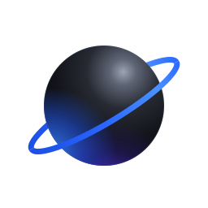

NEPTORchatTermos de uso do Neptor chat
Última atualização: 24 de outubro de 2026
Ao criar uma conta ou usar o Neptor chat ("Neptor") você concorda com estes termos e com a Política de privacidade. Se não concordar, não use o app.
Quem oferece o Neptor: Elias (pessoa física, desenvolvedor do Neptor) — contato: eliasborgeser@gmail.com
1. Sua conta
- Você precisa ter 13 anos ou mais. Com menos de 18, precisa da autorização de um responsável.
- Use dados verdadeiros e guarde a sua senha. Você responde pelo que acontece na sua conta.
- Não é permitido usar nomes (de usuário ou de exibição) que imitem o Neptor, a equipe do Neptor ou outra pessoa, nem usar caracteres invisíveis ou "bugados" para enganar ou atrapalhar a leitura.
2. O que não é permitido
Não use o Neptor para:
- assediar, ameaçar, perseguir ou intimidar alguém;
- discurso de ódio ou discriminação (raça, cor, etnia, religião, origem, gênero, orientação sexual, deficiência ou qualquer outra);
- conteúdo sexual sem consentimento, ou qualquer conteúdo sexual envolvendo menores de 18 anos;
- violência explícita, incentivo a se machucar ou a machucar outras pessoas, terrorismo;
- golpes, fraudes, roubo de contas, links falsos, malware;
- spam, flood ou automação para enviar mensagens em massa;
- divulgar dados pessoais de terceiros sem autorização;
- violar direitos autorais ou qualquer lei brasileira;
- atacar, sobrecarregar ou tentar burlar a segurança do Neptor ou de outras pessoas.
3. Conteúdo
- O que você envia continua sendo seu. Você nos autoriza a guardar e transmitir esse conteúdo só para fazer o Neptor funcionar (entregar mensagens, mostrar seu perfil, etc.).
- Você é responsável pelo que envia e pelo que coloca no perfil (foto, banner, bio, status e nome).
4. Órbitas e moderação
- Quem cria uma órbita (e os cargos que ele indicar) modera a órbita: pode apagar mensagens, castigar, expulsar e banir membros, conforme as regras da própria órbita e destes termos.
- Você pode bloquear qualquer pessoa e denunciar mensagens, perfis e conversas pelo app. Denúncias de órbitas vão para quem modera a órbita; denúncias do privado e de perfis vão para a equipe do Neptor.
- A equipe do Neptor pode, conforme a gravidade: enviar um aviso oficial, limpar partes do perfil (foto, banner, bio, status, tags) com conteúdo impróprio, aplicar suspensão temporária ou banimento, encerrar as sessões de uma conta (por exemplo, quando ela foi invadida) e remover conteúdo, contas ou órbitas que violem estes termos ou a lei, com ou sem aviso prévio quando o caso for grave. Toda ação da equipe fica registrada.
5. Neptor+
- O Neptor+ é uma assinatura opcional (hoje R$ 9,99 por mês) com benefícios de perfil e de uso: estilo do nome (nome de exibição, fonte e cor), som de entrada, mensagens maiores, selo e o rádio Commander/Relay nas órbitas de quem assina. A lista atual fica em Configurações › Neptor+.
- Nada do que é essencial é pago: voz, transmissão de tela, órbitas e privado são grátis.
- O Neptor+ vale pelo período contratado e não é renovado automaticamente enquanto a cobrança pelo app não existir. Quando a assinatura vencer, os benefícios são desativados; as escolhas de estilo ficam guardadas e voltam se você assinar de novo.
- Violar estes termos pode levar à perda do Neptor+ sem reembolso, quando a lei permitir.
6. Loja
- A Loja oferece itens visuais para o perfil (molduras e banners animados). Os itens são de uso pessoal, dentro do Neptor, e não podem ser trocados por dinheiro.
- Enquanto os pagamentos não existirem, os itens só são liberados pela equipe. Quando existirem, preço, forma de pagamento e regras de reembolso (incluindo o direito de arrependimento do Código de Defesa do Consumidor, quando cabível) aparecerão antes da compra.
- Um item pode sair da Loja; nesse caso ele deixa de poder ser usado, e itens comprados serão tratados conforme a lei.
7. Disponibilidade e mudanças
- Fazemos o possível para o Neptor funcionar sem interrupções, mas ele pode ficar fora do ar para manutenção ou por problemas técnicos.
- Podemos mudar o app, os recursos e estes termos. Mudanças importantes serão avisadas no app; continuar usando depois do aviso significa aceitar a nova versão.
8. Encerramento
Você pode apagar sua conta a qualquer momento em Configurações › Minha conta › "Apagar conta".
9. Lei e foro
Estes termos seguem as leis do Brasil. Fica eleito o foro do domicílio do usuário consumidor.